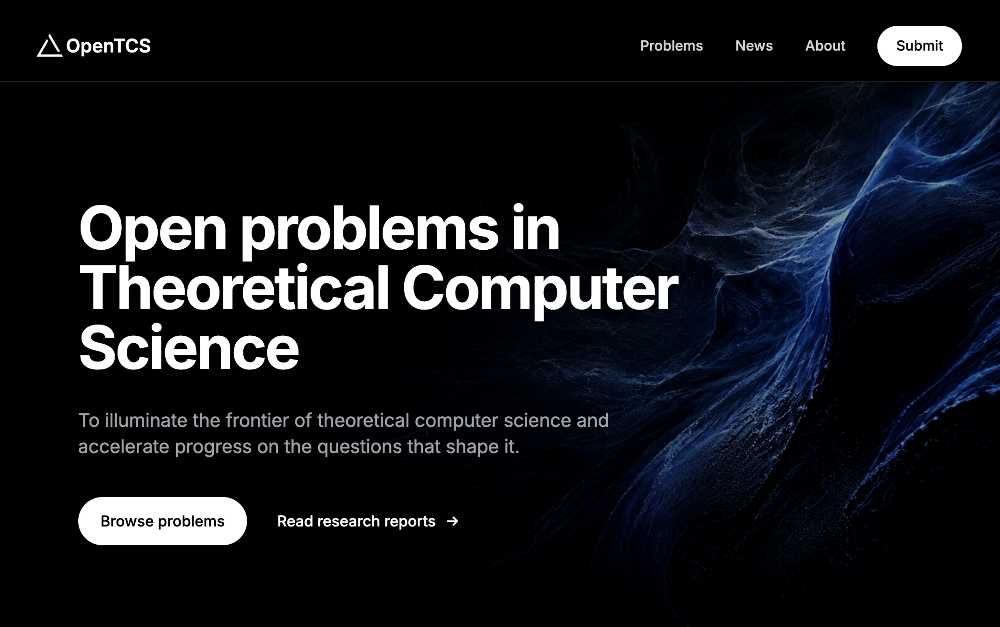
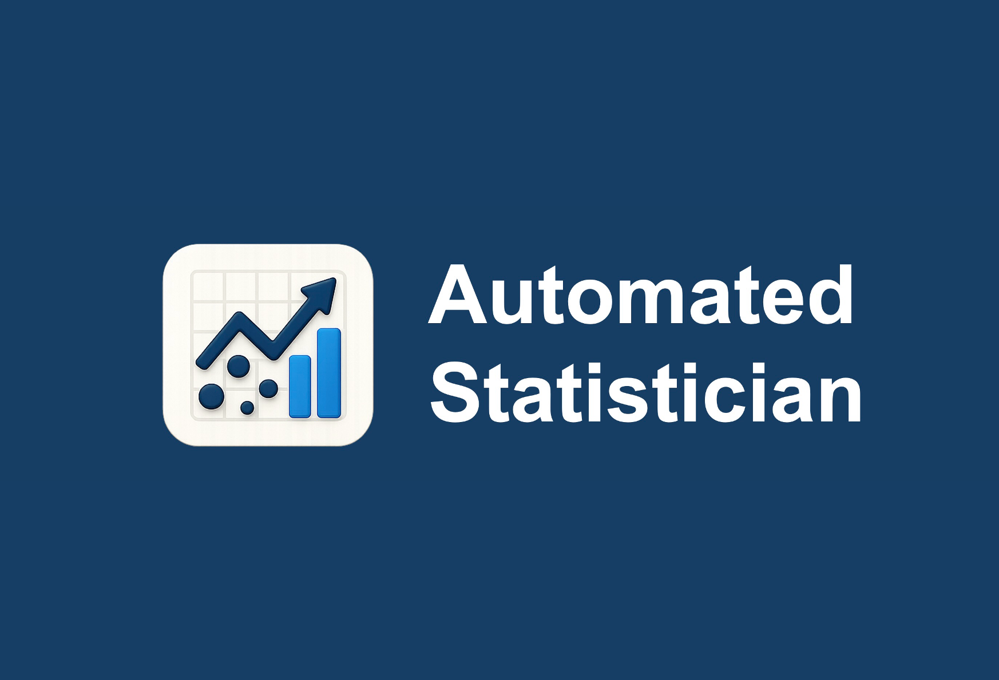
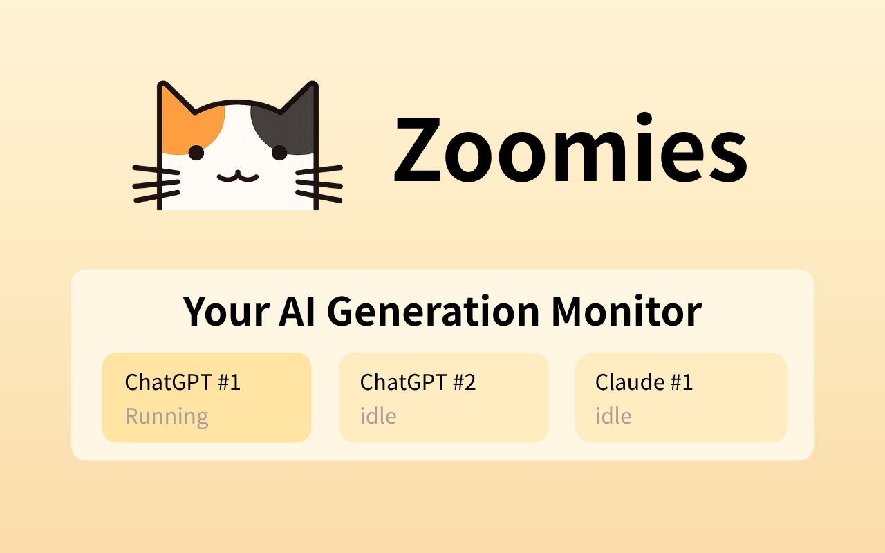

OpenTCS builds shared infrastructure to accelerate AI-assisted progress on open problems in theoretical computer science.

“Indeed, clarifying philosophical issues was the original point of their work; the technological payoffs only came later!”
Hi, I am a first-year Ph.D. student in Statistics and Data Science at Southern University of Science and Technology (SUSTech). I am very fortunate to be advised by Prof. Yuxin Tao. Before my Ph.D., I worked as a research assistant with Prof. Jiaye Teng, who introduced me to this field and shaped much of my early research taste.
Recently, I have been thinking about what I call wide research. I am drawn to the unexpected connections between ideas that seem far apart. A problem becomes more interesting when it crosses into another field and reveals something more fundamental. To me, AI makes this freedom to move across fields possible.

OpenTCS builds shared infrastructure to accelerate AI-assisted progress on open problems in theoretical computer science.

AutoSTAT is a user-friendly agent framework for end-to-end data analysis and interactive optimization.

Zoomies is a Chrome extension that lets you know when AI websites are still generating or have finished.